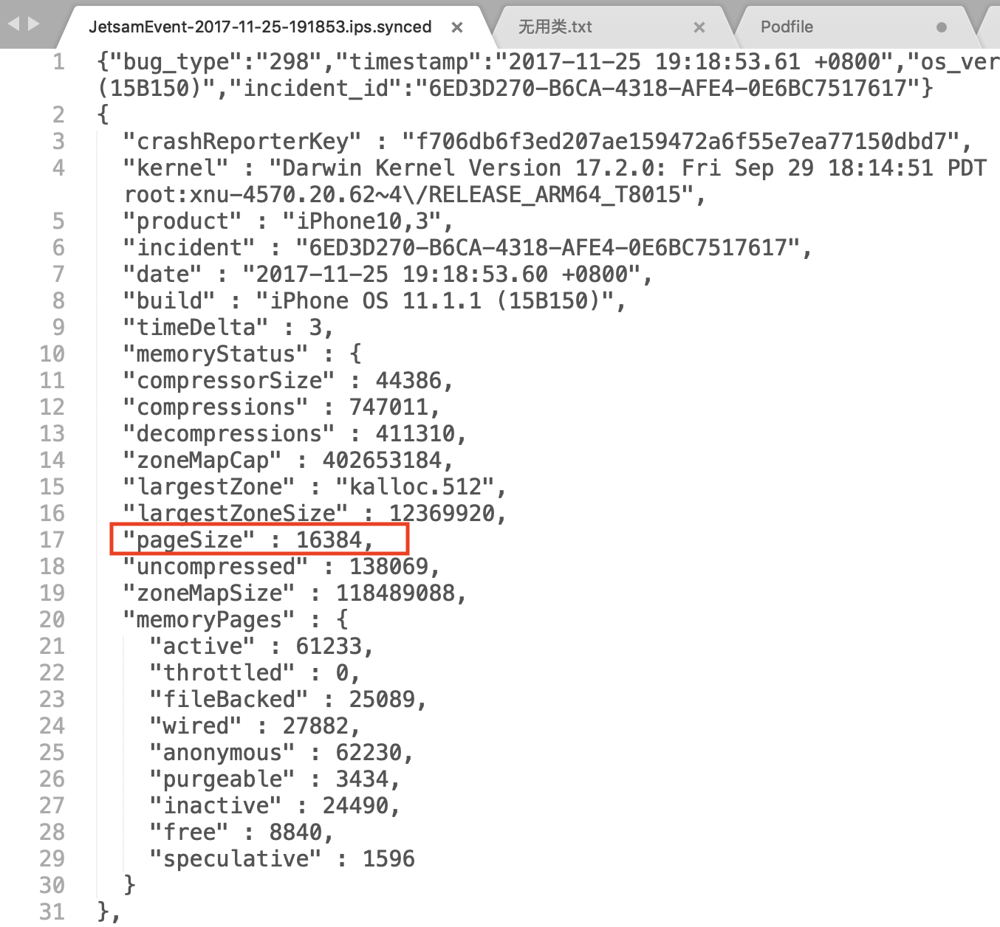

- 00 开篇词 锚定一个点，然后在这个点上深耕.md
- 01 建立你自己的iOS开发知识体系.md
- 02 App 启动速度怎么做优化与监控？.md
- 03 Auto Layout 是怎么进行自动布局的，性能如何？.md
- 04 项目大了人员多了，架构怎么设计更合理？.md
- 05 链接器：符号是怎么绑定到地址上的？.md
- 06 App 如何通过注入动态库的方式实现极速编译调试？.md
- 07 Clang、Infer 和 OCLint ，我们应该使用谁来做静态分析？.md
- 08 如何利用 Clang 为 App 提质？.md
- 09 无侵入的埋点方案如何实现？.md
- 10 包大小：如何从资源和代码层面实现全方位瘦身？.md
- 11 热点问题答疑（一）：基础模块问题答疑.md
- 12 iOS 崩溃千奇百怪，如何全面监控？.md
- 13 如何利用 RunLoop 原理去监控卡顿？.md
- 14 临近 OOM，如何获取详细内存分配信息，分析内存问题？.md
- 15 日志监控：怎样获取 App 中的全量日志？.md
- 16 性能监控：衡量 App 质量的那把尺.md
- 17 远超你想象的多线程的那些坑.md
- 18 怎么减少 App 电量消耗？.md
- 19 热点问题答疑（二）：基础模块问题答疑.md
- 20 iOS开发的最佳学习路径是什么？.md
- 21 除了 Cocoa，iOS还可以用哪些 GUI 框架开发？.md
- 22 细说 iOS 响应式框架变迁，哪些思想可以为我所用？.md
- 23 如何构造酷炫的物理效果和过场动画效果？.md
- 24 A_B 测试：验证决策效果的利器.md
- 25 怎样构建底层的发布和订阅事件总线？.md
- 26 如何提高 JSON 解析的性能？.md
- 27 如何用 Flexbox 思路开发？跟自动布局比，Flexbox 好在哪？.md
- 28 怎么应对各种富文本表现需求？.md
- 29 如何在 iOS 中进行面向测试驱动开发和面向行为驱动开发？.md
- 30 如何制定一套适合自己团队的 iOS 编码规范？.md
- 31 iOS 开发学习资料和书单推荐.md
- 32 热点问题答疑（三）.md
- 33 iOS 系统内核 XNU：App 如何加载？.md
- 34 iOS 黑魔法 Runtime Method Swizzling 背后的原理.md
- 35 libffi：动态调用和定义 C 函数.md
- 36 iOS 是怎么管理内存的？.md
- 37 如何编写 Clang 插件？.md
- 38 热点问题答疑（四）.md
- 39 打通前端与原生的桥梁：JavaScriptCore 能干哪些事情？.md
- 40 React Native、Flutter 等，这些跨端方案怎么选？.md
- 41 原生布局转到前端布局，开发思路有哪些转变？.md
- 42 iOS原生、大前端和Flutter分别是怎么渲染的？.md
- 43 剖析使 App 具有动态化和热更新能力的方案.md
- 用户故事 我是如何学习这个专栏的？.md
- 结束语 慢几步，深几度.md
14 临近 OOM，如何获取详细内存分配信息，分析内存问题？
你好，我是戴铭。今天我们来聊聊，临近OOM，如何获取详细的内存分配信息，分析内存问题的话题。
OOM，是Out of Memory的缩写，指的是App占用的内存达到了iOS系统对单个App占用内存上限后，而被系统强杀掉的现象。这么说的话，OOM其实也属于我们在第12篇文章“iOS 崩溃千奇百怪，如何全面监控？”中提到的应用“崩溃”中的一种，是由iOS的Jetsam机制导致的一种“另类”崩溃，并且日志无法通过信号捕捉到。
JetSam机制，指的就是操作系统为了控制内存资源过度使用而采用的一种资源管控机制。
我们都知道，物理内存和 CPU 对于手机这样的便携设备来说，可谓稀缺资源。所以说，在iOS 系统的虚拟内存管理中，内存压力的管控就是一项很重要的内容。
接下来，我就跟你介绍一下如何获取内存上限值，以及如何监控到App因为占用内存过大而被强杀的问题？
通过 JetsamEvent 日志计算内存限制值
想要了解不同机器在不同系统版本的情况下，对 App 的内存限制是怎样的，有一种方法就是查看手机中以 JetsamEvent 开头的系统日志（我们可以从设置->隐私->分析中看到这些日志）。
在这些系统日志中，查找崩溃原因时我们需要关注 per-process-limit 部分的 rpages。rpages 表示的是 ，App 占用的内存页数量；per-process-limit 表示的是，App 占用的内存超过了系统对单个App 的内存限制。
这部分日志的结构如下：
"rpages" : 89600,
"reason" : "per-process-limit",
现在，我们已经知道了内存页数量 rpages 为 89600，只要再知道内存页大小的值，就可以计算出系统对单个App限制的内存是多少了。
内存页大小的值，我们也可以在 JetsamEvent 开头的系统日志里找到，也就是pageSize的值。如下图红框部分所示：

- 可以看到，内存页大小 pageSize 的值是16384。接下来，我们就可以计算出当前 App 的内存限制值：pageSize * rpages / 1024 /1024 =16384 * 89600 / 1024 / 1024 得到的值是 1400 MB，即 1.4G。这些 JetsamEvent 日志，都是系统在杀掉 App 后留在手机里的。在查看这些日志时，我们就会发现，很多日志都是 iOS 系统内核强杀掉那些优先级不高，并且占用的内存超过限制的 App 后留下的。
这些日志属于系统级的，会存在系统目录下。App上线后开发者是没有权限获取到系统目录内容的，也就是说，被强杀掉的 App 是无法获取到系统级日志的，只能线下设备通过连接 Xcode 获取到这部分日志。获取到Jetsam 后，就能够算出系统对 App 设置的内存限制值。
那么，iOS系统是怎么发现 Jetsam 的呢？
iOS 系统会开启优先级最高的线程 vm_pressure_monitor 来监控系统的内存压力情况，并通过一个堆栈来维护所有 App 的进程。另外，iOS系统还会维护一个内存快照表，用于保存每个进程内存页的消耗情况。
当监控系统内存的线程发现某 App 内存有压力了，就发出通知，内存有压力的 App 就会去执行对应的代理，也就是你所熟悉的 didReceiveMemoryWarning 代理。通过这个代理，你可以获得最后一个编写逻辑代码释放内存的机会。这段代码的执行，就有可能会避免你的App被系统强杀。
系统在强杀App前，会先做优先级判断。那么，这个优先级判断的依据是什么呢？
iOS系统内核里有一个数组，专门用于维护线程的优先级。这个优先级规定就是：内核用线程的优先级是最高的，操作系统的优先级其次，App 的优先级排在最后。并且，前台 App 程序的优先级是高于后台运行 App 的；线程使用优先级时，CPU 占用多的线程的优先级会被降低。
iOS系统在因为内存占用原因强杀掉App前，至少有6秒钟的时间可以用来做优先级判断。同时，JetSamEvent日志也是在这6秒内生成的。
除了JetSamEvent日志外，我们还可以通过XNU来获取内存的限制值。
通过 XNU 获取内存限制值
在 XNU 中，有专门用于获取内存上限值的函数和宏。我们可以通过 memorystatus_priority_entry 这个结构体，得到进程的优先级和内存限制值。结构体代码如下：
typedef struct memorystatus_priority_entry {
pid_t pid;
int32_t priority;
uint64_t user_data;
int32_t limit;
uint32_t state;
} memorystatus_priority_entry_t;
在这个结构体中，priority 表示的是进程的优先级，limit就是我们想要的进程内存限制值。
通过内存警告获取内存限制值
通过XNU 的宏获取内存限制，需要有 root 权限，而App 内的权限是不够的，所以正常情况下，作为App开发者你是看不到这个信息的。那么，如果你不想越狱去获取这个权限的话，还可以利用 didReceiveMemoryWarning 这个内存压力代理事件来动态地获取内存限制值。
iOS系统在强杀掉App之前还有6秒钟的时间，足够你去获取记录内存信息了。那么，如何获取当前内存使用情况呢？
iOS系统提供了一个函数 task_info， 可以帮助我们获取到当前任务的信息。关键代码如下：
struct mach_task_basic_info info;
mach_msg_type_number_t size = sizeof(info);
kern_return_t kl = task_info(mach_task_self(), MACH_TASK_BASIC_INFO, (task_info_t)&info, &size);
代码中，task_info_t 结构里包含了一个resident_size 字段，用于表示使用了多少内存。这样，我们就可以获取到发生内存警告时，当前App 占用了多少内存。代码如下：
float used_mem = info.resident_size;
NSLog(@"使用了 %f MB 内存", used_mem / 1024.0f / 1024.0f)
定位内存问题信息收集
现在，我们已经可以通过三种方法来获取内存上限值了，而且通过内存警告的方式还能够动态地获取到这个值。有了这个内存上限值以后，你就可以进行内存问题的信息收集工作了。
要想精确地定位问题，我们就需要 dump 出完整的内存信息，包括所有对象及其内存占用值，在内存接近上限值的时候，收集并记录下所需信息，并在合适的时机上报到服务器里，方便分析问题。
获取到了每个对象的内存占用量还不够，你还需要知道是谁分配的内存，这样才可以精确定位到问题的关键所在。一个对象可能会在不同的函数里被分配了内存并被创建了出来，当这个对象内存占用过大时，如果不知道是在哪个函数里创建的话，问题依然很难精确定位出来。那么，怎样才能知道是谁分配的内存呢？
这个问题，我觉得应该从根儿上去找答案。内存分配函数 malloc 和 calloc 等默认使用的是 nano_zone。nano_zone 是256B以下小内存的分配，大于256B 的时候会使用 scalable_zone 来分配。
在这里，我主要是针对大内存的分配监控，所以只针对 scalable_zone 进行分析，同时也可以过滤掉很多小内存分配监控。比如，malloc函数用的是 malloc_zone_malloc，calloc 用的是 malloc_zone_calloc。
使用scalable_zone 分配内存的函数都会调用 malloc_logger 函数，因为系统总是需要有一个地方来统计并管理内存的分配情况。
具体实现的话，你可以查看 malloc_zone_malloc 函数的实现，代码如下：
void *malloc_zone_malloc(malloc_zone_t *zone, size_t size)
{
MALLOC_TRACE(TRACE_malloc | DBG_FUNC_START, (uintptr_t)zone, size, 0, 0);
void *ptr;
if (malloc_check_start && (malloc_check_counter++ >= malloc_check_start)) {
internal_check();
}
if (size > MALLOC_ABSOLUTE_MAX_SIZE) {
return NULL;
}
ptr = zone->malloc(zone, size);
// 在 zone 分配完内存后就开始使用 malloc_logger 进行进行记录
if (malloc_logger) {
malloc_logger(MALLOC_LOG_TYPE_ALLOCATE | MALLOC_LOG_TYPE_HAS_ZONE, (uintptr_t)zone, (uintptr_t)size, 0, (uintptr_t)ptr, 0);
}
MALLOC_TRACE(TRACE_malloc | DBG_FUNC_END, (uintptr_t)zone, size, (uintptr_t)ptr, 0);
return ptr;
}
其他使用 scalable_zone 分配内存的函数的方法也类似，所有大内存的分配，不管外部函数是怎么包装的，最终都会调用 malloc_logger 函数。这样的话，问题就好解决了，你可以使用 fishhook 去 Hook 这个函数，加上自己的统计记录就能够通盘掌握内存的分配情况。出现问题时，将内存分配记录的日志捞上来，你就能够跟踪到导致内存不合理增大的原因了。
小结
为了达到监控内存的目的，我们需要做两件事情：一是，能够根据不同机器和系统获取到内存有问题的那个时间点；二是，到了出现内存问题的那个时间点时，还能要取到足够多的可以分析内存问题的信息。
针对这两件事，我在今天这篇文章里和你分享了在 JetsamEvent 日志里、在 XNU 代码里、在 task_info 函数中怎么去找内存的上限值。然后，我和你一起分析了在内存到达上限值时，怎么通过内存分配时都会经过的 malloc_logger 函数来掌握内存分配的详细信息，从而精确定位内存问题。
说到这里你可能会回过头来想，为什么用于占用内存过大时会被系统强杀呢？macOS 打开一堆应用也会远超物理内存，怎么没见系统去强杀 macOS 的应用呢？
其实，这里涉及到的是设备资源的问题。苹果公司考虑到手持设备存储空间小的问题，在 iOS 系统里去掉了交换空间，这样虚拟内存就没有办法记录到外部的存储上。于是，苹果公司引入了 MemoryStatus 机制。
这个机制的主要思路就是，在 iOS 系统上弹出尽可能多的内存供当前应用使用。把这个机制落到优先级上，就是先强杀后台应用；如果内存还不够多就强杀掉当前应用。而在macOS 系统里，MemoryStatus 只会强杀掉标记为空闲退出的进程。
在实现上，MemoryStatus 机制会开启一个memorystatus_jetsam_thread 的线程。这个线程，和内存压力监测线程 vm_pressure_monitor 没有联系，只负责强杀应用和记录日志，不会发送消息，所以内存压力检测线程无法获取到强杀应用的消息。
除内存过大被系统强杀这种内存问题以外，还有以下三种内存问题：
- 访问未分配的内存： XNU 会报 EXC_BAD_ACCESS错误，信号为 SIGSEGV Signal #11 。
- 访问已分配但未提交的内存：XNU 会拦截分配物理内存，出现问题的线程分配内存页时会被冻结。
- 没有遵守权限访问内存：内存页面的权限标准类似 UNIX 文件权限。如果去写只读权限的内存页面就会出现错误，XNU 会发出 SIGBUS Signal #7 信号。
第一种和第三种问题都可以通过崩溃信息获取到，在收集崩溃信息时如果发现是这两类，我们就可以把内存分配的记录同时传过来进行分析，对于不合理的内存分配进行优化和修改。
课后小作业
我今天提到了定位内存问题需要获取更多的信息，比如内存分配。那么，请你来根据我们今天所讲的 hook malloc_logger 的方法，来实现一个记录内存分配的小工具吧。
感谢你的收听，欢迎你在评论区给我留言分享你的观点，也欢迎把它分享给更多的朋友一起阅读。
© 2019 - 2023 Liangliang Lee. Powered by gin and hexo-theme-book.